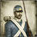

Total War Encyclopaedia
Manual
Units
Buildings
Arts
Clans
Characters
Provinces
Specialities
Campaign Selection
Fall of the Samurai Units
Line Infantry
Line Infantry
Garrison Infantry
Azure Dragon Force
Black Bear Infantry
Black Tortoise Force
Imperial Infantry
Line Infantry
Red Bear Infantry
Republican Infantry
Shinsengumi Police Force
Shogunate Infantry
Vermilion Bird Force
White Bear Infantry